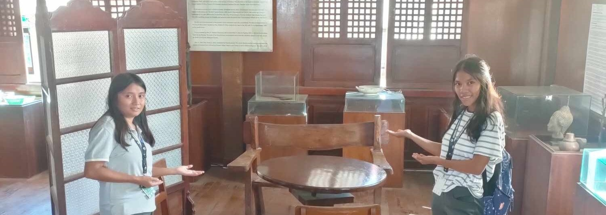
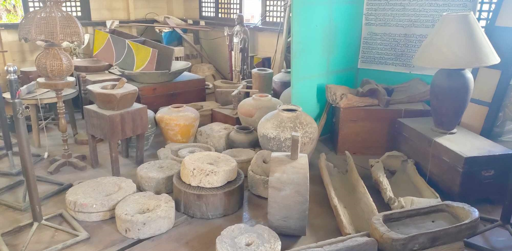
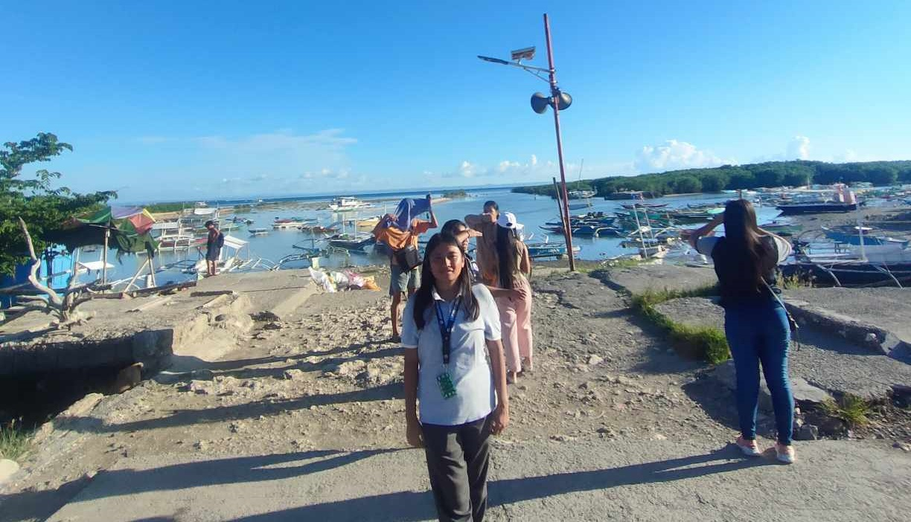
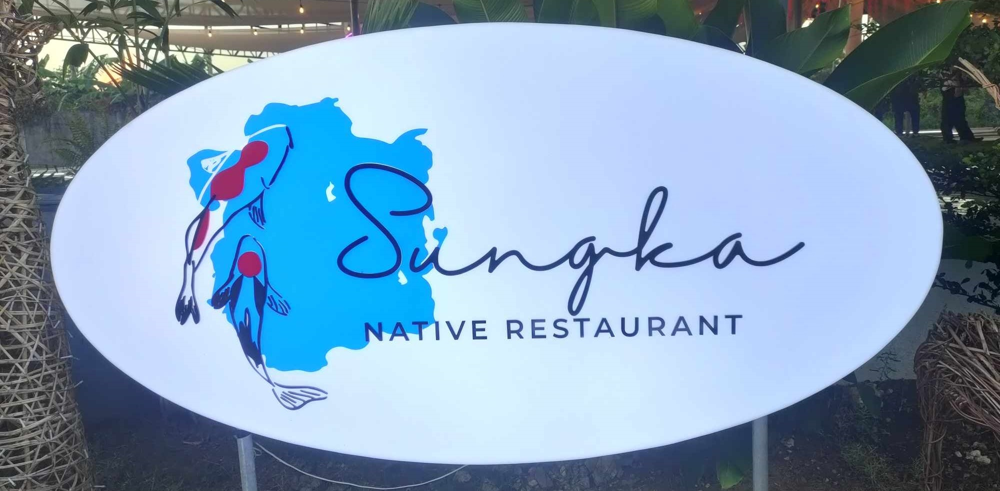
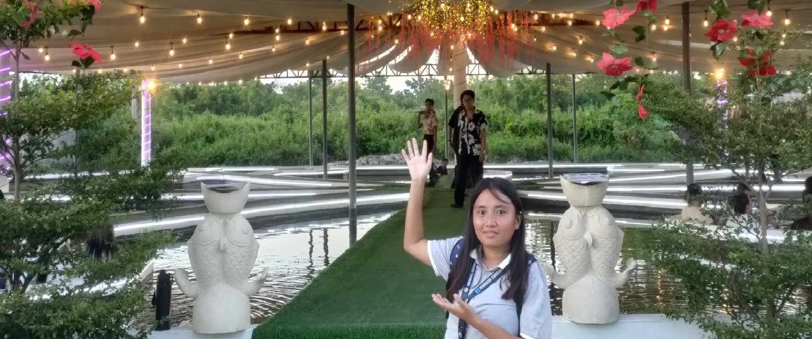
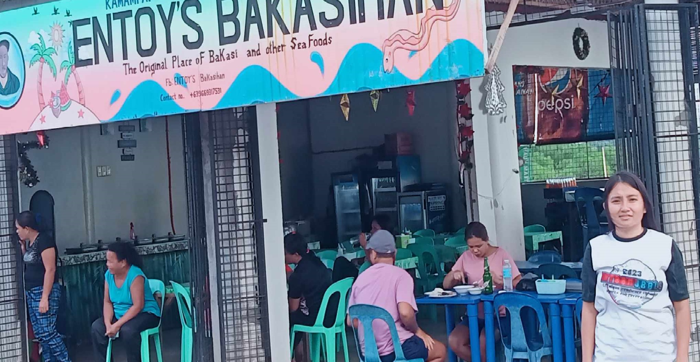
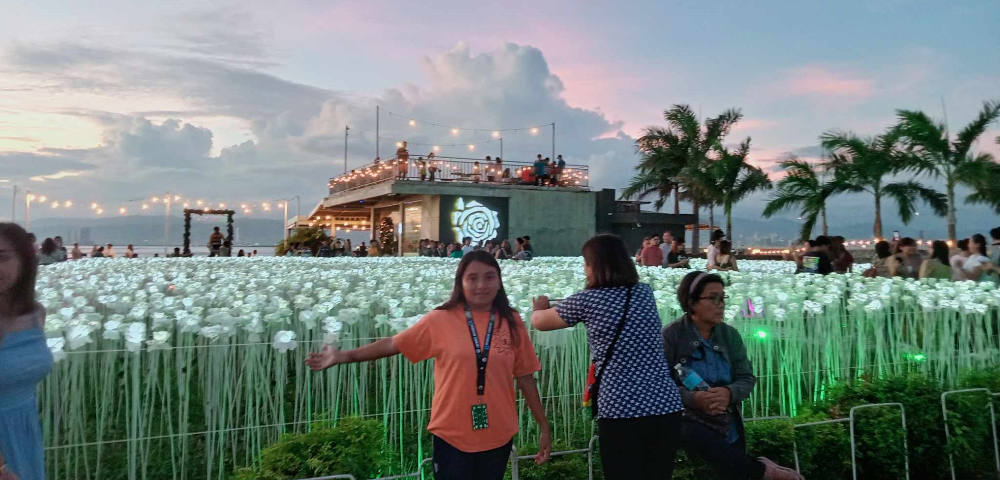
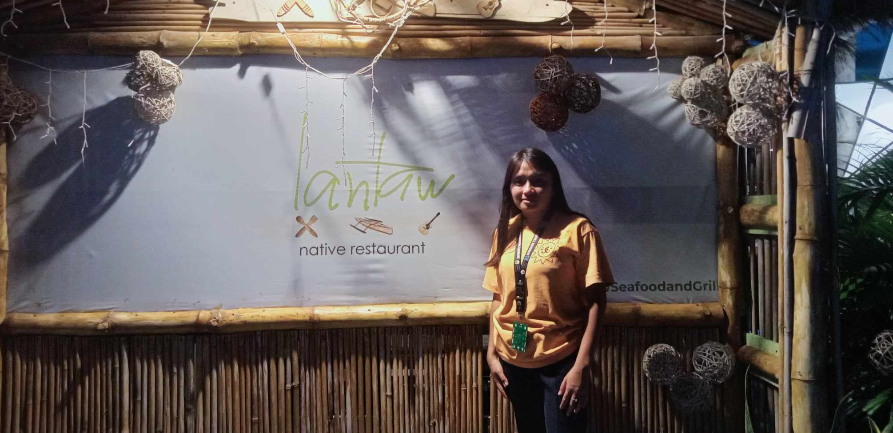
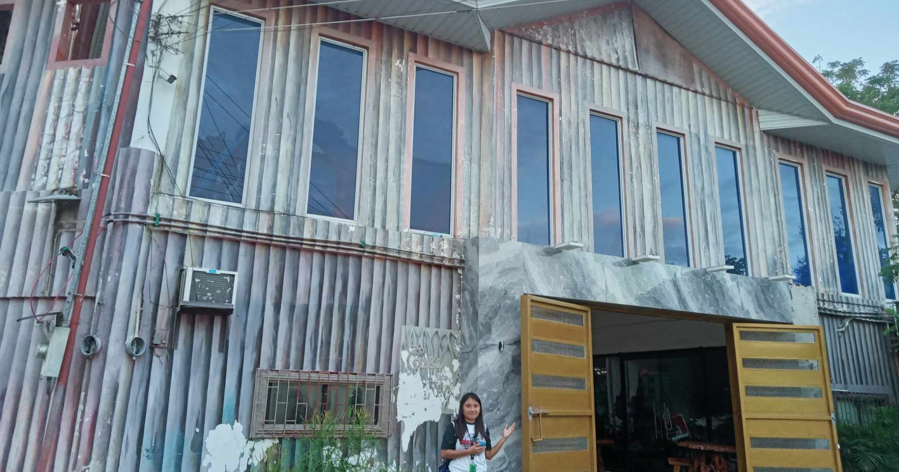

The museum displays some of the oldest replics that found
in different place in cordova . Some of them owned by sitoy clans
, and others are found in museum were donated by local cordovanhons
to be displayed in the museum, i became interested to go to the
museum because Gusto ko ang mga sandata at naka-display sa museo
ay mga lumang kutsilyo. Ang museo ay libre bagaman, walang pasukan sa lahat,
nais lamang na ito ay pinananatili ng lokal na pamahalaan dahil ang mga museo
ay sinadya upang tingnan kung gaano kayaman ang kultura.


Ang Bantayan Bay ay isang puting sandbar na may mga bakawan na
ilang metro lamang ang layo mula sa baybayin ng Cordova. Ipinagmamalaki
nito ang magagandang turquoise na tubig na kumikinang na parang salamin
sa isang maliwanag, maaraw na araw. Ito ay tiyak na may hitsura ng bakasyon
sa tag-araw na may bukas na espasyo na malayo sa baybayin at isang puting
buhangin na kama sa ilalim ng tubig na antas ng baywang. Ang mga bakawan
ay tumutubo sa gilid ng sandbar kung saan ang mabuhangin na lupain ay
biglang bumagsak sa isang madilim na asul na kailaliman sa karagatan.


Ang bagong bukas na katutubong restaurant
ay pinangalanang SUNGKA NATIVE RESTAURANT. Ang Sungka ay isang
salitang Filipino at ito ay tumutukoy sa isang sikat na laro
sa Pilipinas. Ito ay nagsasangkot ng pagbagsak sa isang butas
ng isang tabla na hugis kanue. Siguro tinatawag nila itong
sungka dahil sari-saring lutuing pinoy ang mayroon sila.
Makikita mo sa larawan na ang kanilang mga hapag kainan
ay napapalibutan ng tubig na may maraming isda ng Koi.
Ang lugar ay talagang napakaperpekto para sa mga mag-asawa,
pamilya at mga kaibigan.
>

Ang Bakasihan ng Entoy ay marahil ang
pinakaluma at pinakatanyag na kainan na naghahain ng bakasi
sa bayan dahil ang lugar ay sagana sa mga reef eel dahil ang
tidal flats ng dagat ay halos madamo at maputik na nakakatulong
sa ikabubuhay ng igat. Ang kanilang specialty dish ay ang Linarang
Bakasi (Sour Stew). with Reef Eels), na isang perpektong luto na
igat na inigisa sa toyo, berdeng mangga, fermented black beans, at
pinaasim ng sampalok at iba pang lihim na pampalasa.


Matatagpuan ang 10,000 Roses Cafe &
More sa Cordova Tourism Center sa Barangay Day-As.
Masasabing isa sa mga pinaka-instagrammable na lugar
sa Cebu, ang selling point ng cafe na ito sa Cebu ay
ang artificial white rose garden. Nagbibigay ito ng mga
kawili-wiling tanawin kahit anong oras. Ang mga bulaklak
ay 3 talampakan ang taas at gawa sa plastic. Maaari kang
maglakad sa patlang ng mga puting pamumulaklak sa pamamagitan
ng isang konkretong simento na humahantong sa dining area.
Sa gabi, madalas na pinupuntahan ng mga turista ang lugar dahil
ang mga rosas na ito ay may ilaw sa LED upang lumikha ng mas
nakamamanghang epekto.
>

Ang Lantaw ay salitang Bisaya na ang ibig
sabihin ay “look out”. Ito ay isang floating restaurant na matatagpuan
sa Day-as, Cordova kung saan masisiyahan ka sa pagkakaroon ng intimate
dinner kasama ang iyong pamilya habang pinapanood ang paglubog ng araw
sa abot-tanaw na may nakakatahimik na tunog ng tubig-dagat na nakapalibot
sa restaurant. Ipinagmamalaki din ng interior ng Lantaw restaurant ang
Asian theme, na may mga kawayan na nangingibabaw sa buong istraktura.
Sa katunayan, ang Lantaw Floating Restaurant ay isa sa mga restawran
sa lalawigan ng Cebu na may pinakamagandang tanawin.

Ang Casa Rugina ay isang guest house sa Córdova,
Metro Cebu, Central Visayas, Davao Region na matatagpuan sa Day-As
Barangay Road. Matatagpuan ang Casa Rugina malapit sa sports venue
Day-as Covered Court at sa lugar ng pagsamba sa San Roque. Ang
casa rugina ay isa sa mga lugar na may okasyon tulad ng kasal,
birthday, christening at etc.
>